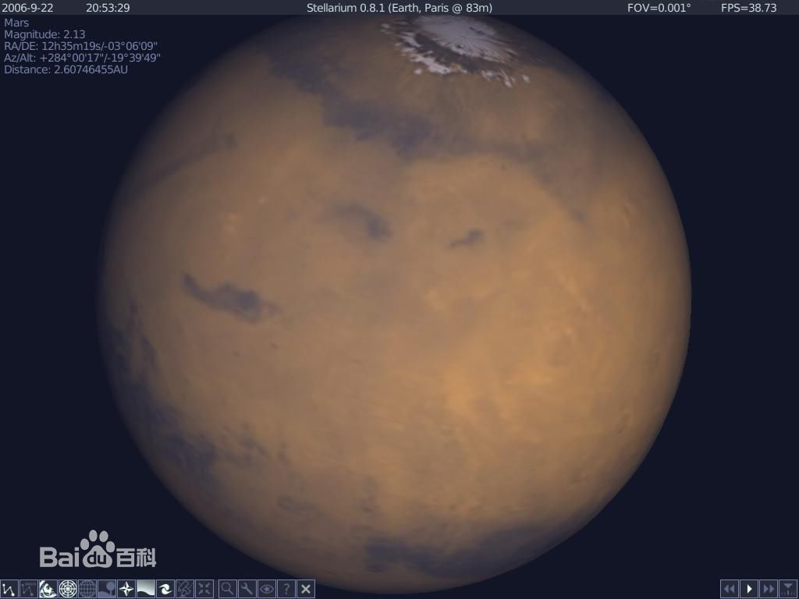

太
阳
太阳是太阳系的中心天体，占有太阳系总体质量的99.86%。太阳系中的八大行星、小行星、流星、彗星、外海王星天体以及星际尘埃等，都围绕着太阳公转，而太阳则围绕着银河系的中心公转。
太阳是位于太阳系中心的恒星，它几乎是热等离子体与磁场交织着的一个理想球体。太阳直径大约是1392000（1.392×10⁶）公里，相当于地球直径的109倍；体积大约是地球的130万倍；其质量大约是2×10³⁰千克（地球的330000倍）。从化学组成来看，现在太阳质量的大约四分之三是氢，剩下的几乎都是氦，包括氧、碳、氖、铁和其他的重元素质量少于2%，采用核聚变的方式向太空释放光和热。
太阳目前正在穿越银河系内部边缘猎户臂的本地泡区中的本星际云。在距离地球17光年的距离内有50颗最邻近的恒星系（与太阳距离最近的恒星是称作比邻星的红矮星，大约4.2光年）。
太阳是一颗黄矮星（光谱为G2V），黄矮星的寿命大致为100亿年，目前太阳大约45.7亿岁。 在大约50至60亿年之后，太阳内部的氢元素几乎会全部消耗尽，太阳的核心将发生坍缩，导致温度上升，这一过程将一直持续到太阳开始把氦元素聚变成碳元素。虽然氦聚变产生的能量比氢聚变产生的能量少，但温度也更高，因此太阳的外层将膨胀，并且把一部分外层大气释放到太空中。当转向新元素的过程结束时，太阳的质量将稍微下降，外层将延伸到地球或者火星目前运行的轨道处（这时由于太阳质量的下降，这两颗行星将会离太阳更远）。
水
星
最接近太阳，是太阳系中最小的行星。水星在直径上小于木卫三和土卫六，但它的质量更大。
基本数据
公转轨道：距太阳57,910,000 千米 (0.387天文单位)
水星直径：4,880 千米
质量：3.30e23 千克
名称来源
在古罗马神话中水星是商业、旅行和偷窃之神，即古希腊神话中的赫耳墨斯，为众神传信的神，或许由于水星在空中移动得快，才使它得到这个名字。
探测历史
早在公元前3000年的苏美尔时代，人们便发现了水星，古希腊人赋于它两个名字：当它初现于清晨时称为阿波罗，当它闪烁于夜空时称为赫耳墨斯。不过，古希腊天文学家们知道这两个名字实际上指的是同一颗星星，赫拉克赖脱（公元前5世纪之希腊哲学家）甚至认为水星与金星并非环绕地球，而是环绕着太阳在运行。
仅有水手10号探测器于1973年和1974年造访水星。它仅仅勘测了水星表面的45%（并且很不幸运，由于水星太靠近太阳，以致于哈勃望远镜无法对它进行安全的摄像）。 水星的轨道偏离正圆程度很大，近日点距太阳仅四千六百万千米，远日点却有7千万千米，在轨道的近日点它以十分缓慢的速度按岁差围绕太阳向前运行（在十九世纪，天文学家们对水星的轨道半径进行了非常仔细的观察，但无法运用牛顿力学对此作出适当的解释。存在于实际观察到的值与预告值之间的细微差异是一个次要（每千年相差七分之一度）但困扰了天文学家们数十年的问题。有人认为在靠近水星的轨道上存在着另一颗行星（有时被称作Vulcan，“祝融星”），由此来解释这种差异，结果最终的答案颇有戏剧性：爱因斯坦的广义相对论。在人们接受认可此理论的早期，水星运行的正确预告是一个十分重要的因素。（水星因太阳的引力场而绕其公转，而太阳引力场极其巨大，据广义相对论观点，质量产生引力场，引力场又可看成质量，所以巨引力场可看作质量，产生小引力场，使其公转轨道偏离。类似于电磁波的发散，变化的磁场产生电场，变化的电场产生磁场，传向远方。－－译注） 在1962年前，人们一直认为水星自转一周与公转一周的时间是相同的，从而使面对太阳的那一面恒定不变。这与月球总是以相同的半面朝向地球很相似。但在1965年，通过多普勒雷达的观察发现这种理论是错误的。我们已得知水星在公转二周的同时自转三周，金星是太阳系中唯一已知的公转周期与自转周期共动比率小于1:1的天体。
水星上的温差是整个太阳系中最大的，温度变化的范围为90开到700开。相比之下，金星的温度略高些，但更为稳定。
水星在许多方面与月球相似，它的表面有许多陨石坑而且十分古老；它也没有板块运动。另一方面，水星的密度比月球大得多，(水星 5.43 克/立方厘米 月球 3.34克/立方厘米)。水星是太阳系中仅次于地球，密度第二大的天体。事实上地球的密度高部分源于万有引力的压缩；或非如此，水星的密度将大于地球，这表明水星的铁质核心比地球的相对要大些，很有可能构成了行星的大部分。因此，相对而言，水星仅有一圈薄薄的硅酸盐地幔和地壳。
巨大的铁质核心半径为1800到1900千米，是水星内部的支配者。而硅酸盐外壳仅有500到600千米厚，至少有一部分核心大概成熔融状。
事实上水星的大气很稀薄，由太阳风带来的被破坏的原子构成。水星温度如此之高，使得这些原子迅速地散逸至太空中，这样与地球和金星稳定的大气相比，水星的大气频繁地被补充更换。 水星的表面表现出巨大的急斜面，有些达到几百千米长，三千米高。有些横处于环形山的外环处，而另一些急斜面的面貌表明他们是受压缩而形成的。据估计，水星表面收缩了大约0.1%（或在星球半径上递减了大约1千米）。
水星上最大的地貌特征之一是Calori 盆地，直径约为1300千米，人们认为它与月球上最大的盆地Maria相似。如同月球的盆地，Calori盆地很有可能形成于太阳系早期的大碰撞中，那次碰撞大概同时造成了星球另一面正对盆地处奇特的地形。
除了布满陨石坑的地形，水星也有相对平坦的平原，有些也许是古代火山运动的结果，但另一些大概是陨石所形成的喷出物沉积的结果。
水星有一个小型磁场，磁场强度约为地球的1%。
至今未发现水星有卫星。
通常通过双筒望远镜甚至直接用肉眼便可观察到水星，但它总是十分靠近太阳，在曙暮光中难以看到。
金
星
是离太阳第二近的行星，太阳系中第六大行星。在所有行星中，金星的轨道最接近圆，偏差不到1%。
基本数据
轨道半径：距太阳 108,200,000 千米 (0.723 天文单位）
行星直径：12,103.6 千米
质量：4.869e24 千克
名称来源
金星 （希腊语：阿佛洛狄忒；巴比伦语：Ishtar）是美和爱的女神，之所以会如此命名，也许是对古代人来说，它是已知行星中最亮的一颗。（也有一些异议，认为金星的命名是因为金星的表面如同女性的外貌。）
探测历史
金星在史前就已被人所知晓。除了太阳与月亮外，它是最亮的一颗。就像水星，它通常被认为是两个独立的星构成的：晨星叫Eosphorus，晚星叫Hesperus，希腊天文学家更了解这一点。 既然金星是一颗内层行星，从地球用望远镜观察它的话，会发现它有位相变化。伽利略对此现象的观察是赞成哥白尼的有关太阳系的太阳中心说的重要证据。
第一艘访问金星的飞行器是1962年的水手2号。随后，它又陆续被其他飞行器：金星先锋号，苏联尊严7号（第一艘在其他行星上着陆的飞船）、尊严9号（第一次返回金星表面照片[左图]）访问（迄今已总共至少20次）。美国轨道飞行器Magellan成功地用雷达产生了金星表面地图。
金星的自转非常不同寻常，一方面它很慢（金星日相当于243个地球日，比金星年稍长一些），另一方面它是倒转的。另外，金星自转周期又与它的轨道周期同步，所以当它与地球达到最近点时，金星朝地球的一面总是固定的。这是不是共鸣效果或只是一个巧合就不得而知了。
金星有时被誉为地球的姐妹星，在有些方面它们非常相像：
－－ 金星比地球略微小一些（95%的地球直径，80%的地球质量）。
－－ 在相对年轻的表面都有一些环形山口。
－－ 它们的密度与化学组成都十分类似。
由于这些相似点，有时认为在它厚厚的云层下面金星可能与地球非常相像，可能有生命的存在。但是不幸的是，许多有关金星的深层次研究表明，在许多方面金星与地球有本质的不同。
金星的大气压力为90个标准大气压（相当于地球海洋深1千米处的压力），大气大多由二氧化碳组成，也有几层由硫酸组成的厚数千米的云层。这些云层挡住了我们对金星表面的观察，使得它看来非常模糊。这稠密的大气也产生了温室效应，使金星表面温度上升400度，超过了740开（足以使铅条熔化）。金星表面自然比水星表面热，虽然金星比水星离太阳要远两倍。
云层顶端有强风，大约每小时350千米，但表面风速却很慢，每小时连几千米都不到。
地
球
是距太阳第三颗的行星，也是第五大行星
基本数据
轨道半径：149,600,000 千米 （离太阳1.00 天文单位）
行星直径：12,742千米
质量：5.9736e24 千克
名称来源
地球是唯一一个不是从希腊或罗马神话中得到的名字。Earth一词来自于古英语及日耳曼语。这里当然有许多其他语言的命名。在罗马神话中，地球女神叫Tellus－肥沃的土地（希腊语：Gaia，大地母亲）直到16世纪哥白尼时代人们才明白地球只是一颗行星。
它也是太阳系唯一有液态水行星。
地球，当然不需要飞行器即可被观测，然而我们直到二十世纪才有了整个行星的地图。由空间拍到的图片应具有合理的重要性；举例来说，它们大大帮助了气象预报及暴风雨跟踪预报。它们真是与众不同的漂亮啊！
主要成分
地球由于不同的化学成分与地震性质被分为不同的岩层（深度－千米）：
0- 40地壳
40- 400 Upper mantle - 上地幔
400- 650 Transition region - 过渡区域
650-2700 Lower mantle - 下地幔
2700-2890 D'' layer - D"层
2890-5150 Outer core -外核
5150-6378 Inner core -内核
地壳的厚度不同，海洋处较薄，大洲下较厚。内核与地壳为实体；外核与地幔层为流体。不同的层由不连续断面分割开，这由地震数据得到；其中最有名的有数地壳与上地幔间的莫霍面－不连续断面了。 地球的大部分质量集中在地幔，剩下的大部分在地核；我们所居住的只是整体的一个小部分（下列数值×10e24千克）：
大气 = 0.0000051
海洋 = 0.0014
地壳 = 0.026
地幔 = 4.043
外地核 = 1.835
内地核 = 0.09675
地核可能大多由铁构成（或镍/铁），虽然也有可能是一些较轻的物质。地核中心的温度可能高达500K，比太阳表面还热；下地幔可能由硅，镁，氧和一些铁，钙，铝构成；上地幔大多由livene，pyroxene（铁/镁硅酸盐），钙，铝构成。我们知道这些金属都来自于地震；上地幔的样本到达了地表，就像火山喷出岩浆，但地球的大部分还是难以接近的。地壳主要由石英（硅的氧化物）和类长石的其他硅酸盐构成。就整体看，地球的化学元素组成为：
34.6% 铁
29．5% 氧
15．2% 硅
12．7% 镁
2．4% 镍
1．9% 硫
0.05% 钛
地球是太阳系中密度最大的星体。
其他的类地行星可能也有相似的结构与物质组成，当然也有一些区别：月球至少有一个小内核；水星有一个超大内核（相当于它的直径）；火星与月球的地幔要厚得多；月球与水星可能没有由不同化学元素构成的地壳；地球可能是唯一一颗有内核与外核的类地行星。值得注意的是，我们的有关行星内部构造的理论只是适用于地球。
不像其他类地行星，地球的地壳由几个实体板块构成，各自在热地幔上漂浮。理论上称它为板块说。它被描绘为具有两个过程：扩大和缩小。扩大发生在两个板块互相远离，下面涌上来的岩浆形成新地壳时。缩小发生在两个板块相互碰撞，其中一个的边缘部份伸入了另一个的下面，在炽热的地幔中受热而被破坏。在板块分界处有许多断层（比如加利福尼亚的San Andreas断层），大洲板块间也有碰撞（如印度洋板块与亚欧板块）。目前有八大板块：
北美洲板块－北美洲，西北大西洋及格陵兰岛
南美洲板块－南美洲及西南大西洋
南极洲板块－南极洲及沿海
亚欧板块－ 东北大西洋，欧洲及除印度外的亚洲
非洲板块－非洲，东南大西洋及西印度洋
印度与澳洲板块－印度，澳大利亚，新西兰及大部分印度洋
Nazca板块－ 东太平洋及毗连南美部分地区
太平洋板块－ 大部分太平洋（及加利福尼亚南岸）
还有超过廿个小板块，如阿拉伯，菲律宾板块。地震经常在这些板块交界处发生。绘成图使得更容易地看清板块边界。
地球的表面十分年轻。在50亿年的短周期中（天文学标准），不断重复着侵蚀与构造的过程，地球的大部分表面被一次又一次地形成和破坏，这样一来，除去了大部分原始的地理痕迹（比如星体撞击产生的火山口）。这样一来，地球上早期历史都被清除了。地球至今已存在了45到46亿年，但已知的最古老的石头只有40亿年，连超过30亿年的石头都屈指可数。最早的生物化石则小于39亿年。没有任何确定的记录表明生命真正开始的时刻的证据。
71%的地球表面为水所覆盖。地球是行星中唯一一颗能在表面存在有液态水（虽然在土卫六的表面存在有液态乙烷与甲烷，木卫二的地下有液态水）。我们知道，液态水是生命存在的重要条件。海洋的热容量也是保持地球气温相对稳定的重要条件。液态水也造成了地表侵蚀及大洲气候的多样化，这是在太阳系中独一无二的过程（很早以前，火星上也许也有这种情况）。
地球的大气由77%的氮，21%氧，微量的氩、二氧化碳和水组成。地球初步形成时，大气中可能存在大量的二氧化碳，但是几乎都被组合成了碳酸盐岩石，少部分溶入了海洋或给活着的植物消耗了。板块构造与生物活动维持了大气中二氧化碳到其他场所再返回的不停流动。大气中稳定存在的少量二氧化碳通过温室效应对维持地表气温有极其深远的重要性。温室效应使平均表面气温提高了35摄氏度（从冻人的-21℃升到了适人的14℃）；没有它海洋将会结冰，而生命将不可能存在。
丰富的氧气的存在从化学观点看是很值得注意的。氧气是很活泼的气体，一般环境下易和其他物质快速结合。地球大气中的氧的产生和维持由生物活动完成。没有生命就没有充足的氧气。
地球与月球的交互作用使地球的自转每世纪减缓了2毫秒。当前的调查显示出大约在9亿年前，一年有481天又18小时。

火
星
木
星
土
星
天
王
星
海
王
星